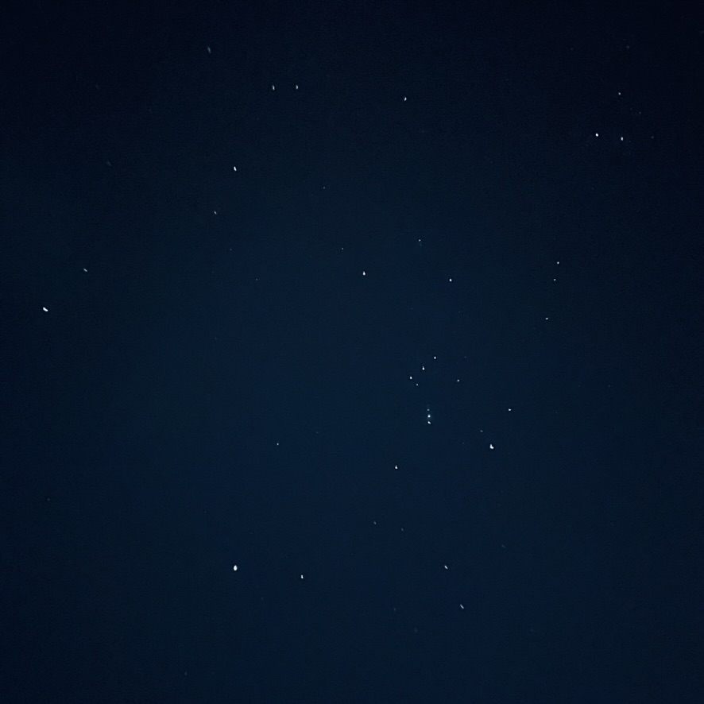

回忆一遍那天午后
过年回家时工头让我买动车票，说给我报账。我舍不得，问他能不能买普通车票，多余的钱留着过个年。他当时笑着说了声你呀就没再接话。我也没好意思继续开口。除夕那天中午母亲炒了俩菜，饭桌上我提起这件事。父亲也说了句你呀，我就嘿嘿地笑。母亲说出门在外该厚点脸皮，不如问问老板说的报账还算数不。我说难得了。
我们围着炉子吃饭，火炉中央热着一块速食披萨。那是我年前在一家超市做装修时买的。当时我寒暄问店家说她这打工咋样，她挺高兴地和我讲了讲平时要做的事，卸货、收银、打扫……她说最重要的是查货架上商品过期没，如果保质期还剩一个月就得下架。我挺感兴趣问她说那商品怎么处理呢？她说送货时厂家会收回去。我说整挺好啊，包回收。她说哪哦，那肯定得亏点。
然后我在这低价买了些临近过期的零食，妹妹挺高兴。母亲也很高兴，说瞧「沙琪玛」这包装，一看就很高档，我们平时可吃不到。我顺着她话说那您多尝尝。
东西总是会过期。母亲从屋子里拿了盒纯牛奶说你妹现在不错，能喝纯牛奶了。你暑假时买回来的两箱都喝完了，我给你留了几个，你解渴。我听到说「暑假时」就意识到不对劲，看了眼包装，果然过期了。我说这些东西你们自己喝别留着，都快过期了。母亲有点愣说哪这么快过期哦。我心里叹了口气，插上吸管喝了口说这盒还没有，你们以后多注意，特别小孩还在长身体呢。母亲松了口气说是吧，那就好。
母亲有时候会讲些亏欠了我啊之类的话，什么我们当年要是懂这些，注意下营养什么的，你也不会这么瘦，可能还会再高些。我在工地上跑了几年，正是吃长饭的年纪，胃口极好，再瘦的猴子也长出腱子肉，长成在任何地方都不会哭泣的青年。母亲总觉得我还太瘦。有次我们去镇上赶场，她似乎觉得有必要对我的丑脸负责，拉着我要去街头的江湖医生把脸上的痣点掉。我说妈不用，我喜欢自己现在的样子。
想起刚买冰箱的时候，我们常炖一锅菜吃好几天，等汤和菜混成渣再下一锅臊子面。母亲常夸奖说还好现在有冰箱，仿佛冰箱里面的空间可以冻结时间。那时我还不是很大，有天也带着玩笑的语气说天天吃剩饭一点都不好。这个瞬间也成了我今后常常回忆起的后悔。
母亲年轻时要负责一大家人的饭，父亲和舅舅都还年轻，在隔壁村的煤窑上班，每人一顿都能吃两大瓷碗。她煮大锅饭习惯了。而我不经意的话一定刺痛了她的心。
炉子旁边的铁皮烟囱下拿桶接着水，父亲说今年买的煤太歪了，等过几天还是和我去砍些柴回来，明年还是烧柴算了。我说这卖煤的难道还浇水？父亲说可不是嘛，一袋煤接近 30 块了，他这赚多少亏心钱。我说不至于哦，把烟囱打开，抖出些烟灰，说可能是堵住了，平时多通下。第二天早上父亲抱怨说是不是把烟囱摆的位置不对，不起火。还是得砍点柴回来。我假装调整了下烟囱，说现在位置肯定好了。我知道父亲是觉得烧煤就是在烧钱，心疼。说好，去砍些。
父亲拿出准备好的纸钱，我带着妹妹去挂坟，一路上看着村子里多出了不少小孩。儿童相见不相识。突然想起这句诗来。感觉自己成了一个从很远的地方回来的人。弯弯绕绕，路上长满荆棘。我小的时候这里的土地都还耕种，父亲总仔细地把路上的杂草藤蔓清理掉。清明的时候也总带着我来祭祖，我们会带几条鞭炮、一碗肉，一壶酒，几炷香，偶尔母亲会跪在坟前讲些话。大部分我都记不得了，有时会说保佑我好好读书。最后朝着东方磕几个头，那是外祖母们的方向。现在这项任务落在我的手上，我做的简单，母亲总不满意。
我在坟前磕了几个头，拜托先人们保佑妹妹好好读书。现在搞什么普职分流，一半的初中生毕业后没机会念普高，小孩压力也挺大。我从小也不大擅长念书，高中读了一半就跟着舅舅去甘肃打桩，只能作为负面典型，说不出什么劝学的话。回去吃了晚饭和妹妹在河边转，我用在短视频亲子博主那学习的技巧提问，想激发下她好奇心。她说哪来这么多为什么，你是十万个为什么吗？
我说哼，我不喜欢和没有好奇心的小孩玩。
她说好吧，这样的话我也要问你为什么。
我说好，那我们玩个游戏吧。你必须提十个为什么。不用十万个，提十个好吧。
她不耐烦地纠结了一会，说好吧。
——为什么灯光是白色而不是其它颜色？
——为什么月亮总是晚上出现？
——为什么小虫朝着灯光聚集？
——为什么书上说「星星一闪闪的像人们眨眼睛」而不说「人眨眼睛像星星」呢？
——……
我说你提的问题太好了。
她说嘿嘿是吧，我都是观察周围环境提出的问题，厉害吧？
我说厉害。
她说那你最喜欢哪个？
我说眨眼睛那个，太妙了。
